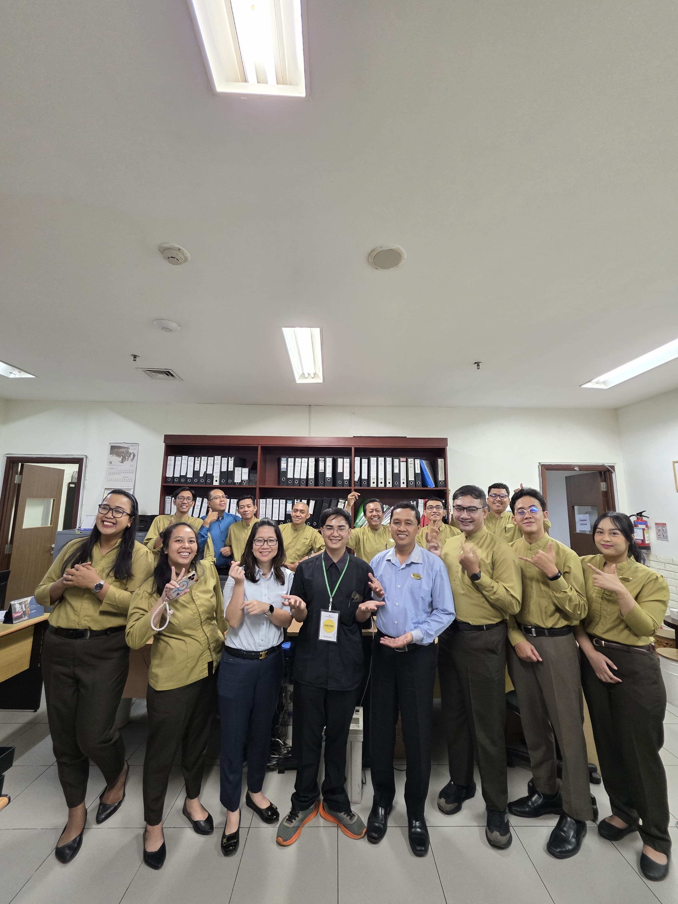

Pengalaman Kerja & Dokumentasi
Tanggung jawab pekerjaan serta dokumentasi kegiatan saat magang.

Magang Industri
Hotel Royal Ambarrukmo
IT Support Intern
Bertanggung jawab dalam memberikan dukungan teknis operasional harian bagi staf dan tamu hotel. Tugas utama meliputi:
- Melakukan troubleshooting perangkat keras (PC, printer, perangkat POS) dan perangkat lunak.
- Memelihara dan mengamankan koneksi jaringan komputer (LAN & Wi-Fi) area hotel.
- Menangani kendala helpdesk dan memberikan solusi cepat untuk kelancaran operasional departemen.
- Mengembangkan sistem internal berbasis web untuk mendukung efisiensi administrasi magang.